Linux 性能分析入门与实战¶
讲者：张亚（挖坑的张师傅）；来源：Bilibili BV1pS4y1M7Zc · P1；范围：完整单集 00:00–80:44。 按原顺序整理的完整忠实讲稿，保留讲者解释、示例、互动与限定；不是逐字速记。中文 ASR 原件随附。截图来自源视频 640×360，源码与图表小字清晰度受原片限制。编校疑点在相邻位置单列，不构成外部事实核验。
00:00 本次分享的内容与边界¶
今天分享的主题就是 Linux 性能剖析的方法。为什么会想来讲这个呢？其实我们在日常工作过程中，很多同学都会遇到类似的问题：比如线上的服务器 CPU 跑满了，或者他的进程时不时就会偶然被系统杀掉了；还有做压测的时候，很多时候压测上不去。这个时候我都会帮忙做一些分析和调试，所以也积累了比较多这一块性能分析的方法。今天我就想做一个简单的分享，把一些我觉得比较重要的知识跟大家说一说。
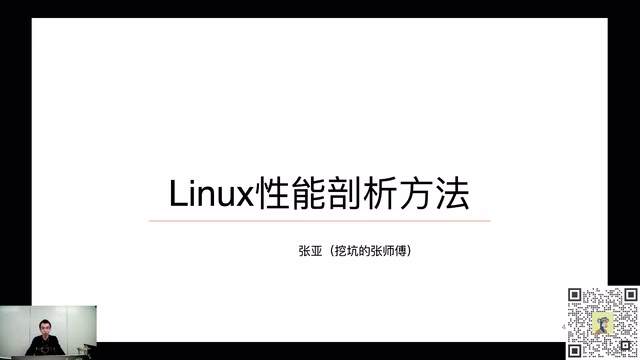
开场课件：Linux 性能剖析方法与讲者张亚 · 原片 00:12
Linux 性能剖析这个话题其实非常庞大，完全不太可能在一次分享里面把它讲清楚，所以今天会有一些侧重点。今天分享的主要内容分为五个部分。
第一部分，我会讲一下我们常说的 Linux 性能的三驾马车，或者性能分析的铁三角：CPU、内存和 I/O 之间的关系，它们之间是怎么样互相影响的。第二部分，我会讲一下进程、线程相关的事情，因为进程、线程与 CPU 调度、CPU 性能直接相关。我也会简单介绍 On-CPU、Off-CPU 火焰图生成的原理。因为前天的分享里面，我有专门做一个主题，讲火焰图生成的方法，这边主要讲 CPU 相关火焰图的生成方法和使用例子。
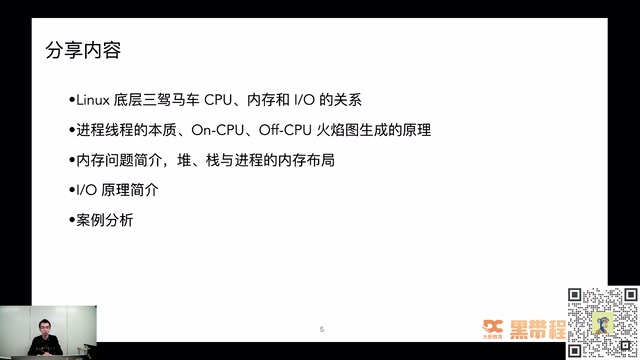
本次分享的五部分内容 · 原片 01:40
第三部分会讲我们的老大难问题——内存。程序正常写的话，其实想把 CPU 跑满还挺难出现的，但是内存泄漏、内存占用过高，基本上是每个程序员都会遇到的问题。我们会讲一讲，在内存分析这一块需要掌握哪些基础知识、有哪些基本概念，让我们再去分析性能问题的时候有一些基本了解。
第四部分，我讲一下文件 I/O 的相关原理。因为很多数据都需要落盘，都需要读写文件，它的性能会直接影响程序性能，我们也会介绍 I/O 怎么影响程序性能。最后会介绍我之前处理过的一个案例：之前压测 Nginx 百万长连接时，一个 OOM 的问题。我也会讲在其中怎么综合运用工具或者方法定位问题，最终把它解决掉。
今天分享什么，不会分享什么？我会主要着重于 Linux 底层原理、使用的工具背后的实现方式，以及分析问题的基本思路。网上有很多讲 Linux 性能分析的文章都在讲命令怎么使用。今天我不会去讲命令参数怎么用、怎么看命令输出的格式，因为网上已经有很多相关的文章介绍了。今天主要想讲背后的工作方法、工作思路，让你切换不同工具，或者换一个新工具的时候，能够知道它底层到底在做什么事情。
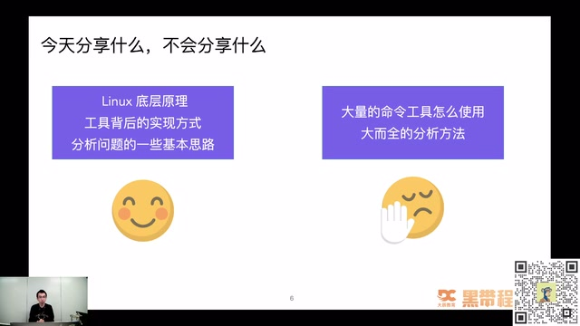
分享范围：底层原理、工具实现与分析思路 · 原片 03:00
03:36 Linux 底层的三驾马车¶
接下来进入第一个部分，就是 Linux 底层的三驾马车。首先做一个简单的选择题：下面哪些被称为 Linux 性能的三驾马车？课件给出的选项是 CPU、调度系统、内存、I/O、内核。大家如果知道答案，可以在评论区刷一波。我看到已经有同学写出一些答案了。
我看有人说 CPU、I/O 和内存，有些人说 CPU、内存、I/O，对，都说的是 1、3、4。其实还是挺厉害的，没有选调度系统，也没有选内核，这两个是比较容易混淆的概念。其实我们说 Linux 性能三驾马车，或者 Linux 性能核心的铁三角，说的就是 CPU、内存和 I/O。
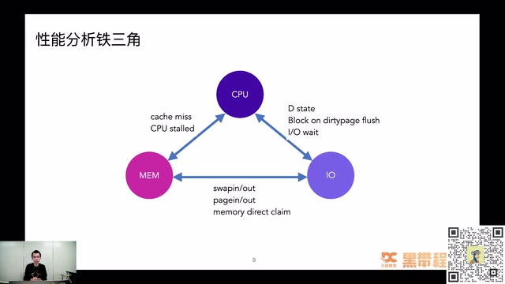
CPU、内存和 I/O 的性能分析铁三角 · 原片 05:00
它们之间的关系错综复杂。CPU 的性能会影响内存，内存又会影响 I/O，I/O 和 CPU 之间又有错综复杂的关系。它们之间的关系是什么样的呢？比如遇到有问题的磁盘，或者读写文件出现严重问题的时候，会出现一个叫 D 状态的进程。D 状态的进程会严重影响 CPU 的一个叫 load average 的东西。之前的一篇掘金文章里面专门讲过，为什么 D 状态的进程会导致系统的 load average 飙升。有时候还会阻塞在 dirty page flush 到磁盘的过程上。
CPU 和内存之间的关系也非常密切。比如想要 CPU 性能非常好，cache miss，还有 CPU stalled 的情况怎么样解决，也是我们写代码、想写非常高性能的库或者中间件时需要考虑的事情。内存与 I/O 的关系会更加紧密一些。我们经常说读写文件，实际上是在读写内存，后面也会讲为什么这样说。其实你读写文件，只是在写内存而已。它们之间交换的关系，就会导致很多内存和 I/O 引起的性能瓶颈。
Linux 性能分析需要全栈的能力，仅会几条命令远远不够。比如排查 CPU 你会用 top，或者用观察上下文切换的命令，或者能够看到一个进程占用多少内存，其实光会使用这些命令远远不够。命令里面输出的内容有很多种，你怎么样区分这些输出，把它们转化成真正解决问题时需要的参数呢？性能分析需要全栈的能力，光会使用命令不够；只有对 Linux 本身的底层原理非常了解，你才有可能学好性能分析。如果掌握了命令，但是不知道怎么看输出结果，其实不可能真正解决一个性能问题。
左边这张图是性能分析大师 Brendan Gregg 画的。它可以明确地告诉我们，排查什么问题的时候需要用什么命令，比如文件相关的性能问题、CPU、Socket 分别需要用什么。这是非常好的一个图，大家可以作为方向图，排查问题的时候参考。但是最重要的还是掌握 Linux 底层原理，知道出现性能问题应该怎么样处理。
这就是性能分析的祖师爷 Brendan Gregg 写的《性能之巅》。如果你想在性能分析这个领域里有一些研究，这本书基本上是必看不可的一本书。
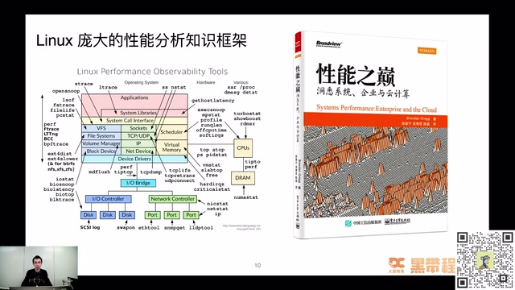
Linux 性能观测工具知识框架与《性能之巅》 · 原片 07:48
07:50 CPU 知识：进程与线程到底是什么¶
第二部分，我们接下来讲 Linux 性能三驾马车之一，CPU 相关的知识。首先问一下大家：大家理解中的进程、线程到底是什么？
基本上没有人不会使用 ps 这个命令。在服务器上输入一下 ps aux，就可以看到操作系统上现在跑了哪些进程，进程 ID 是多少，内存占用多少，CPU 使用率是多少，开始时间是多少，启动命令是什么样的。种种情况我们都可以通过 ps 命令看出来。但真正回想起来，大家觉得一个进程，在操作系统里面到底代表什么样的东西呢？
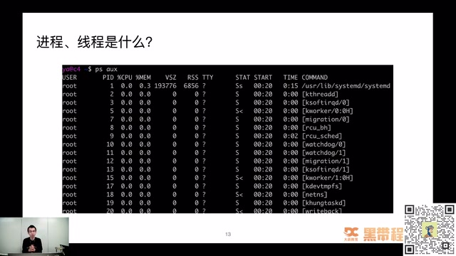
ps aux 输出中的进程与内核线程 · 原片 09:00
我也来说说自己的理解。如果让我自己实现进程这样一种数据结构，我想，肯定要用一个结构体来表示它所有的状态。比如它用到的 CPU，至少要有 CPU 相关的属性；操作系统一定要记录这个进程使用了多少内存。我要对这个进程做内存限制的时候，如果连这个数据都没有，肯定限制不了它。还有什么？还要知道这个进程由谁启动，是 root 用户，还是普通用户；还需要知道这个进程什么时候开始；还需要进程的状态，它属于 running 状态，还是僵尸状态，还是其他状态。
我们写软件的都知道，要表达一种状态，或者一个东西——这里说进程，它也是个东西嘛——我们就要定义一个数据结构，或者定义一个结构体来表示它。等一下会看到进程在内核中真正表示的是什么。有了这个直观感觉，也可以比较好地理解我们之前在学校背过的一句话：进程是资源的封装单位。这句话其实背得很熟，真正理解的时候，等一下就会看到它到底代表什么意思。在讲那一部分之前，我们先看一下进程和线程到底怎么样创建。
CPU 这个章节里面，大家可以问问自己，这些问题是不是真的了解：比如前面讲的进程、线程在内核中的本质区别到底是什么？大家都说进程是比较重量级的东西，线程是一个比较轻量级的进程，这里的重量级、轻量级到底指什么？调度算法有两种不同情况，一种是普通进程，一种是实时进程，它们的调度算法、优先级或者策略有什么不一样？
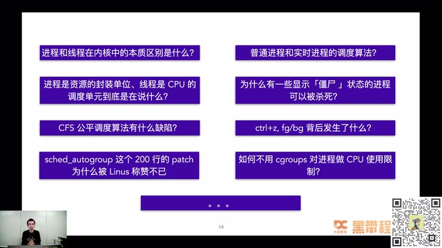
进程、线程和调度相关问题 · 原片 11:00
我们还知道普通进程在 Linux 上使用一个叫 CFS 的公平调度算法，它有哪些缺陷？排查问题经常碰到僵尸进程，网上都说僵尸进程不能被杀死，因为你不能杀死一个已经死掉的人。那么，为什么一些命令里面显示是僵尸状态的进程，我还是能用 kill 命令杀掉？这也是可以带着思考的问题。
经常在命令行里面按下 Ctrl+Z、fg、bg，把一个进程放到后台、前台，真正背后发生了什么？对 Linux 感兴趣的话，还可以看到一个很神奇的 patch，叫 sched_autogroup。这个 patch 大概只有 200 行左右，却被 Linus 称赞不已，说是一个天才的 patch，到底里面做了什么？感兴趣的话，在后面的课程里面也可以看到。然后我们还会看到 cgroups，它也是可以做 CPU 使用限制的，到底怎么实现？这些都是 CPU 这个章节里面需要着重理解的问题。
12:15 进程和线程是怎么创建的¶
接下来先看我觉得比较重要的概念：进程和线程的本质区别到底是什么？为了搞清楚这个问题，我们就看进程到底怎么创建。只有知道它怎么出生，才知道它最初创建的形态是什么样的。
创建进程，在 Linux 里面用了一个函数叫 fork。fork 其实只是 glibc 里面的函数，glibc 最终调用的是 clone 系统调用。用 strace 命令看这个函数执行，大家可以看到执行的是 clone。里面传了什么？需要注意一个参数，就是 flags，也就是传过去的一些标记位。这里面比较有作用的是 SIGCHLD 这个 flag，可以看到没有其他额外的一些 flag。
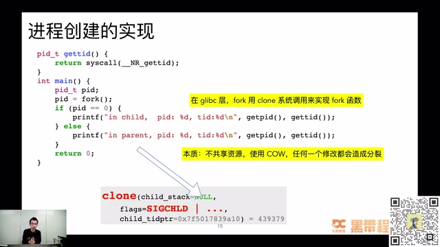
fork 创建进程与 clone 系统调用 · 原片 13:00
它的本质是什么？这里提前剧透一下：不共享资源，使用一个叫 Copy on Write 的机制，任何一次修改都会造成分裂。什么叫分裂？等一下讲线程，大家就知道什么是分裂、什么是不分裂。
线程创建看起来相对简单一点。比如用 glibc 里面的 pthread_create，或者 Java 里面 new 一个 Thread，都可以创建线程。用 strace 命令看，会发现同样是用 clone 系统调用实现的。有什么不一样呢？传的 flag 不一样，这时候多了很多：CLONE_VM、CLONE_FS、CLONE_FILES、CLONE_SIGHAND、CLONE_THREAD。
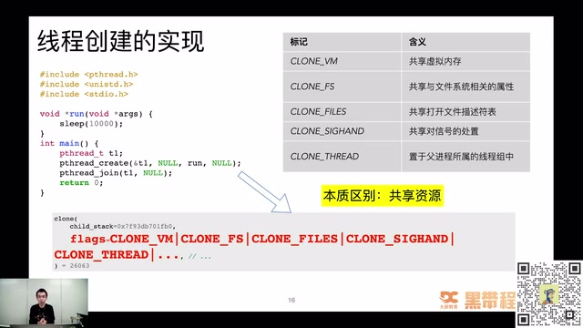
pthread_create 与资源共享 flags · 原片 14:24
它们是什么意思？比如 CLONE_VM 叫共享父进程的虚拟内存，CLONE_FS 共享与文件系统相关的属性，CLONE_FILES 表示共享打开的文件描述符列表。通过对比可以看到，进程创建和线程创建最终走到同一个地方，都到 clone 系统调用，只是传的一些参数不一样，这些参数影响了后面的行为。线程创建的本质是共享资源：共享内存，共享打开文件列表，共享信号处理。进程因为是资源的封装单位，一定要做到资源隔离；如果资源不隔离，就不能称为进程。这就是进程和线程本质上的区别和联系。
总结前面的两点：进程和线程创建其实殊途同归，虽然走的是 glibc 里面不同的函数，一个叫 fork，一个叫 pthread_create，最终走到 clone 系统调用，再调到内核里的 sys_clone，最后调到 _do_fork() 函数。虽然看起来进程和线程行为相差非常大，但底层实际上非常接近。
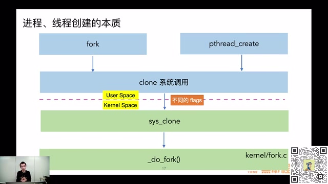
fork 和 pthread_create 在内核中的共同调用路径 · 原片 15:24
15:38 资源复制与共享¶
接下来看资源共享这一块的区别。都说进程是资源的封装单位，是不是说两个进程之间资源完全没关系？其实也不是，它用了比较取巧的方式，叫 Copy on Write。如果不对子进程或者父进程里面做写入，其实用的是同一份数据，这样可以减少拷贝，可以减少很多时间。比如 Redis 做备份的时候，其实也会创建一个进程。想一下，如果要把它所有内存拷贝一份，耗时会非常长；如果通过 Copy on Write 只拷贝有变化的部分，整体速度就会好很多。
线程简单很多，所有的共享嘛。A 线程可以改 B 线程内存里的数据，A 线程可以读写 B 线程打开的文件。这些都是线程资源共享的机制，导致它们行为上的差异。
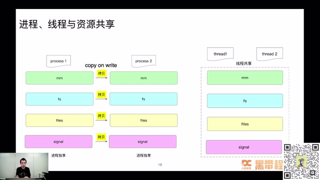
进程复制与线程共享资源的对比 · 原片 16:24
接下来讲最核心的部分：进程和线程本质区别是什么？其实在内核里面，都是叫 task_struct 的东西。我们都说差别很大，一个是资源封装单位，一个是 CPU 调度基本单元，其实在内核那里，它们都是一样的，都是 task_struct，只是里面一些 field 不一样。
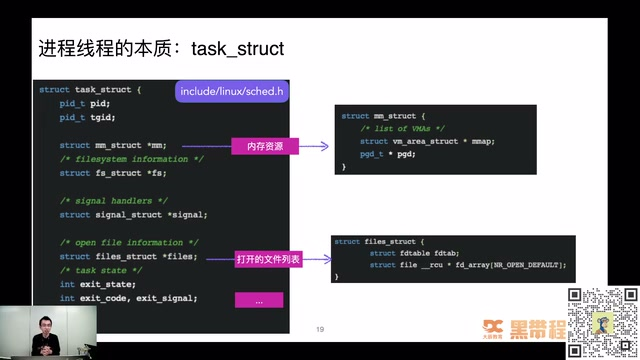
task_struct 关联内存、文件和信号资源 · 原片 17:24
比如刚提到进程是资源封装单位，可以看到里面有什么。如果自己实现，其实也会写出类似结构。需要知道它的 ID 是什么，这样 ps 里面才可以看到；还要知道内存资源是什么，需要申请多少内存，申请内存的虚拟地址空间在哪里；还要知道打开文件列表有哪些。
知道这个概念后，再理解进程调度或者线程调度就非常清楚。很多书籍最终都会说，这个地方不特别区分进程和线程，下面都以“进程”同时表示进程和线程，其实说的就是这件事。研究调度的话，它们是同一个东西；研究资源方面的不同，它们就有点不一样。
18:21 进程 ID 怎么分配¶
接下来讲之前有同学问过我的一个问题，当时觉得挺有意思，大家也想一想：进程 ID 的生成规则是什么样的？比如现在生成一个进程，或者命令行执行 ls，其实要创建一个进程执行 ls，它的进程号怎么生成？这里列了三个答案，大家选一选：随机找一个可用的；复用最近刚终止的进程；顺序增长，增长到最大回绕。知道答案的可以把 1、2、3 扣在评论区。
看到有小伙伴提交答案了。有人写了 3，还有其他不同答案吗？大家都写 3 了，也有人写 2。其实我想重点说一下 2 和 3 这两个事情，当时我以为会选用 2 这种模式。还有人选 4 的，觉得有不同的答案是吧？其实答案是 3，顺序增长，增长到最大以后回绕。
当时有同事问我的时候，我主观感觉是肯定会找一个最近刚终止的进程，这样最方便嘛，可以快速地做一个缓存，把前面刚终止的进程号塞到缓存列表、队列里面，用的时候直接从队列里面 pop 一个出来就好了。
真正研究的时候，发现不是这样子，而且有挺多有意思的东西。它是顺序增长，增长到最后最大以后回绕。为什么这样呢？当时想了很久，后来终于想明白，其实是为了防止一些混淆。
比如做了一个监控系统，这时候进程 1024 映射到 Nginx，结果它挂掉了，又起了一个 MySQL 进程，用到 Nginx 刚挂掉那个进程的 ID。1024 之前表示 Nginx，很短时间就切成 MySQL，这时候监控系统统计可能造成比较混乱的现象。所以采用的策略，是尽可能让进程号短时间内不重复，除非没有办法。顺序增长，增长到最大以后回绕到最小，再从最小开始往上长，这样短时间重复的概率比较小，除非进程不停销毁、创建。
这个策略有个比较厉害的名字，叫“延迟重用”。原则说起来非常简单：按顺序依次递增分配，从最小一直分配到最大，到了最大就回绕；使用一个位图，快速判断进程号、PID 有没有被分配。比如这时候要分配 1024，不能遍历整个列表判断是否已经分配过，这里用了 bitmap 数据结构来表示 ID 是否已经被分配。
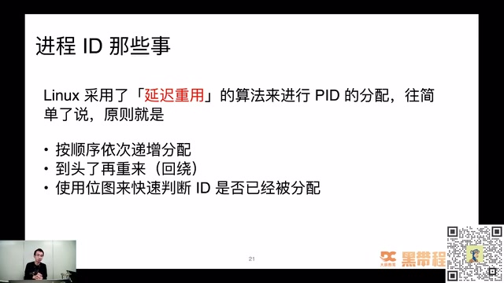
PID 延迟重用的分配规则 · 原片 21:36
位图也在很多场景里用来提高效率，比如很多 OLAP 系统，用位图做去重或者相关加速运算。
既然说增长到最大以后回绕，这个头到底是多少？这就是进程 ID 最大值。我在自己的虚拟机上试了一下，有一个 kernel.pid_max 参数决定它。在我的系统上最大值是 32768。因为进程号从 0 开始，所以有效进程 ID 其实是 0 到 32767。
sysctl -a | grep pid_max
# kernel.pid_max = 32768
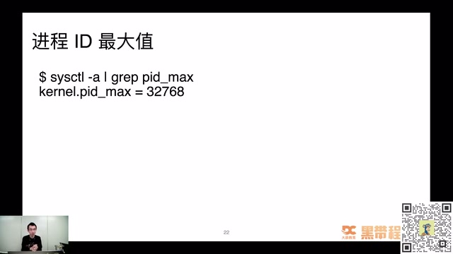
sysctl 查询 kernel.pid_max · 原片 22:48
最小是多少？是不是到了 32767 以后，直接从 0 开始找？当时我以为也是从 0 开始遍历，看 0 有没有占用，1 有没有占用，2 有没有占用，一直到找到第一个可用的为止。后来发现，我还是太年轻了。
所以当时写了代码实测。代码非常简单，就是在一个 while 循环里面不停 fork 进程，总共循环 32768 次，把整个生成 PID 过程中出现的最大 ID、最小 ID 都记下来。比较惊喜地发现，max 肯定对得上，一定是刚刚说的 32767 这个最大值；但最小值居然一次也没有小于 300。当时还是比较奇怪，大家有没有想到为什么这个地方有限制，不管运行多少次，都没有小于 300？知道原因可以在评论区刷一波，我等一下大家。这个问题算程序员里面很难的问题吗？发挥大家想象力吧，其实这个问题不算难。
我觉得这是设计上一个取巧的东西。因为比较小的进程 PID 已经被系统进程占用，而且那些进程是常驻的，所以遍历那些比较小的进程 ID，绝大概率是失败的，一定已经分配过。因此它取了一个值叫 300，在内核选项里配置。用户进程最小从 300 这里开始分配，省掉前面跟系统进程冲突的过程。
这里为什么是 303？因为我机器上 301、302 都已经被一些用户进程占用了，所以不管怎么跑，都从 303 开始。如果你的 301、302 没被占用，其实应该有可能跑出 min 等于 301。
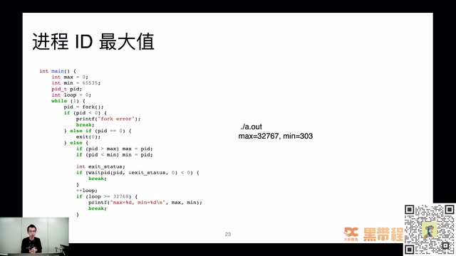
循环 fork、waitpid 测试 PID 最大最小值 · 原片 24:48
大家有没有觉得操作系统实现这些地方挺有意思？虽然好像没有什么用，但我觉得这点小技巧、小心思挺有意思。通过这些简单的用户代码，就能知道操作系统底层是怎么玩的。做技术最重要的是找到自己的乐趣所在。我可能花不到 30 秒就能把代码敲出来，跑一下就知道原来是这样，有些意外发现；不用看代码，也能找到比较有意思的东西。最终比如 min 等于 300 这个界限值怎么来的，还是要看内核代码，因为不能靠猜。
25:55 聊聊 CPU 火焰图¶
接下来聊一下前天讲过的比较大的话题，CPU 火焰图。很多人用过，在实际过程中了解过，或者看到别人用过。我觉得火焰图是非常伟大的发明，从形态上看，像一颗跳动的火苗，是程序员界比较有意思的东西。
问一下：火焰图到底是谁发明的？这里四个选项，Brendan Gregg、Linus、Russ Cox、红孩儿。不会有人选红孩儿吧？等一下大家，看谁答对。有人选 1、有人选 2、有人选 3，选 3 的应该写 Go 语言吧，选 2 的可能被 Linus 大名的光环笼罩了。其实就是前面介绍的《性能之巅》作者 Brendan Gregg 发明的，肯定不是红孩儿，这是搞笑的。第二、第三虽然都是业界超级大牛，但不是火焰图这个地方的贡献者。
说到火焰图，经常混合两个概念：有些代码在 CPU 上执行，有些其实释放了 CPU，在等待执行权，比如等锁、等 I/O、等定时器。这两部分都会严重影响性能，它们之间关系是什么样的，要通过什么火焰图分析？这也是接下来讲的内容。
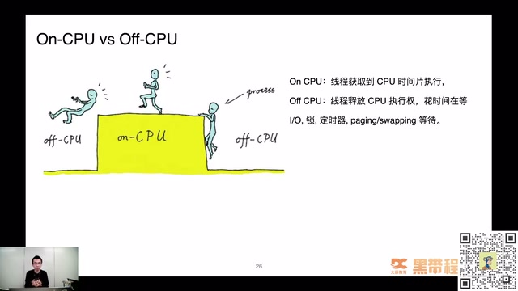
On-CPU 与 Off-CPU 的区别 · 原片 28:00
为了讲清楚火焰图，先写一个简单的例子，是非常简单的一段 C 代码。
首先说明，这里已经禁用内联优化。函数非常短，但没有内联到函数里面，是把优化选项调低了。这个程序其实就做一个事情，不停空转，只是空转分了几个阶段。在 while (1) 的 main 函数里面，for 循环空转 30 万次；A 函数空转 15 万次，其中 10 万次由它自己完成，5 万次由它调用的 D 函数完成；B 函数空转 20 万次，C 函数空转 35 万次。直观上，就能得到它们在一段时间内运行的次数。
main 的 for 循环大概占 30%，main 里面的 for 循环、A、B、C 函数加起来总共是 100，各自比例就是各自现在 for 循环的次数。如果对它做火焰图，做出来就是图中看到的样子：C 占 35%，B 占 20%，A 占 15%，它调用 D，D 占 5%。
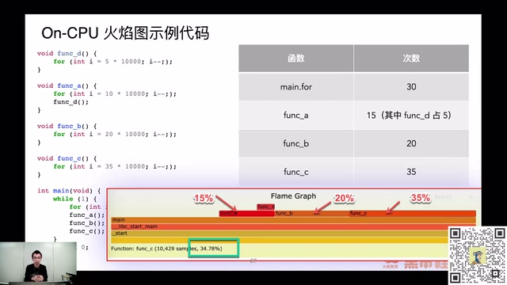
循环示例与 On-CPU 火焰图占比 · 原片 30:00
火焰图怎么看？分横轴和纵轴看。横轴每一个方块表示一个函数，宽度可以近似理解为函数执行时间。其实不能等价于执行时间，它只是采样过程中出现的次数，我们只能近似理解为执行时间。纵轴表示调用栈，最顶层是最顶层的调用栈，最下面是最底层的调用栈；上面的函数都是下面函数的子调用。
所以可以看到 D 被 A 调用，A 被 main 调用，main 还不是整个文件的入口，它还被 glibc 里面的 __libc_start_main 函数调用，再往上还有被 _start 函数调用的过程。通过这张图，可以直观看到程序有哪些方法在执行，这些方法耗掉 CPU 的比例大概怎么样。这样有全局概念，知道调用关系，也知道做性能优化从哪些地方入手。比如图里面让你优化，可能首先选择 C 函数，因为它在最顶层，又比较宽，这就是可以先着重解决的性能问题。
31:03 火焰图生成的三个步骤¶
之前很多同学问，火焰图看起来好神奇，到底怎么生成？我之前也是一知半解，只觉得有工具可以生成，何必知道里面做什么？后来实际使用、研究了一下，觉得挺神奇：怎么就知道一段时间内程序整体宏观的情况？后来发现 Brendan Gregg 的文章说生成有三个步骤。
第一步是采集堆栈，有很多方法，比如 perf、SystemTap、sample-bt 都可以。第二步是折叠堆栈，等一下会看到“折叠”什么意思。第三步是把折叠的堆栈最终生成火焰图。我们分三步详细看看，每一步到底做什么。比如第一步，采集堆栈……
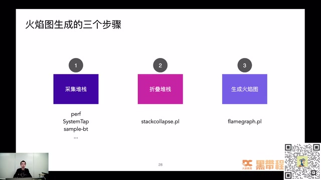
火焰图生成的三个步骤 · 原片 31:48
采集堆栈这里用的工具叫 sample-bt，是我们的春哥大神、OpenResty 作者章亦春的工具，底层使用 SystemTap 实现。这个工具包装了 SystemTap，把 SystemTap 的一些探针包装起来，实现火焰图性能采集工具。等一下看里面采集的脚本到底是什么样。
先看最终输出的内容，把它导向 tmp.bt 文件，里面存的就是现在看到的内容。这里其实只有两个东西：一个是函数调用栈，比如 _start 调用 __libc_start_main，再调用 main，main 又调用 func_c，这就是完整调用栈；除了调用栈，还要知道这个栈在采样周期里面出现的次数，这地方出现 8282 次。下面那个调用栈，_start 调用 __libc_start_main，再调 main，出现 6227 次。这就是采集堆栈这一步完成的事。后面也会看到 Off-CPU 火焰图采集堆栈其实类似，也是要采到堆栈和执行次数。
./sample-bt -p your_pid -t 30 -u > tmp.bt
cat tmp.bt
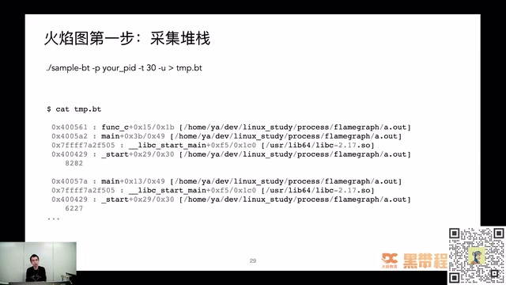
sample-bt 采集与原始调用栈 · 原片 33:00
到了第二步就容易理解。前面采到的堆栈是多行，不便于进一步文本处理，这地方做了“折叠”。折叠就是把一个很高的东西拍扁，叫 fold。处理过程很清楚，把刚刚多级的函数调用栈变成一行，中间一个空格，左边是调用栈，右边是调用次数。
git clone https://github.com/brendangregg/FlameGraph
cd FlameGraph
./stackcollapse-stap.pl tmp.bt > stap_unfolded.out
cat stap_unfolded.out
经过这样处理，就知道每个函数在整个采样周期出现的次数。比如这个例子，简单分析就知道 main 出现大概 3 万次，A 函数大概 4500 次左右。同样可以算出整个调用比例，就能画出前面说的火焰图。
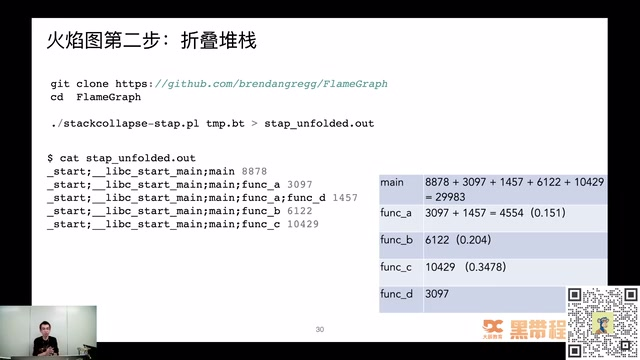
stackcollapse-stap.pl 折叠堆栈及统计 · 原片 34:12
第三步是纯图片操作，把折叠过的堆栈生成 SVG 图片。如果不喜欢用这个 Perl 脚本，也可以自己写，其实比较容易。经过这一步，就生成非常漂亮的火焰图。
./flamegraph.pl stap_unfolded.out > stap-out.svg
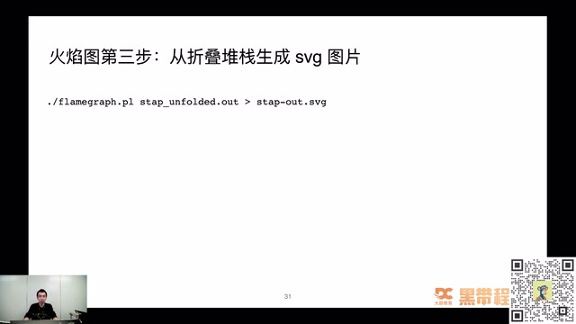
flamegraph.pl 从折叠堆栈生成 SVG · 原片 35:00
这里提一个问题：前面的火焰图，颜色都是红色或者橘色，都是暖色系，为什么 On-CPU 火焰图要是暖色系？知道答案，或者有自己理解，可以在评论区刷一刷。我们继续讲下面内容，看看捕获堆栈怎么做。
我们需要的内容就是堆栈和它出现的次数。SystemTap 这里写了一个回调触发器，叫 timer.profile，是在每个 CPU 上周期触发的定时器。我的电脑是双核虚拟机，每个核一秒钟触发 1000 次左右。里面其实就做一件事：每次 timer.profile 调用，也就是一秒 1000 次这样的频率，记录当前 CPU 上执行的调用栈是什么，把它记录到一个数组里面，你也可以理解为 HashMap。
同时把次数记录下来，等到 30 秒时间到了，把一个 quit 变量置为 1。置为 1 以后，在 for 循环里面，把调用堆栈和执行次数打印出来，就拿到第一步的原始数据，也就是调用堆栈信息。
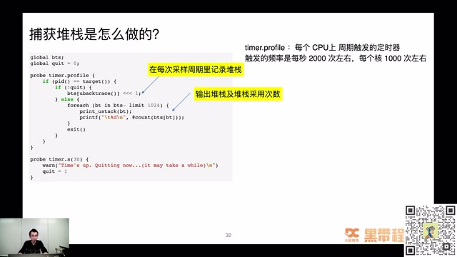
timer.profile 周期采样用户堆栈 · 原片 36:12
前面讲的都是 On-CPU 火焰图，大家从介绍的内容应该知道它怎么工作了。刚刚看到有人说暖色更好看，还有人说更能凸显 CPU 很忙。其实应该说 On-CPU 火焰图就是会疯狂耗 CPU，CPU 很热嘛，所以用暖色系表示。等一下看 Off-CPU，它这时候不耗 CPU，不耗 CPU 就是冷色系，这是后面会讲到的内容。
37:18 Off-CPU：程序为什么没有执行¶
我们解决过很多 CPU 跑满、CPU 占用率很高的问题，其实相对容易解决，大部分是代码 bug，比如死循环，或者一个很大的 for 循环里面做的事情非常少。往往性能上不去、压测的一些性能问题，其实都是 Off-CPU 这块出了一些问题。
比如拿不到 mutex 锁，花大量时间等锁；等待 I/O、网络事件完成；内存不足，需要在进程执行的上下文里面直接回收内存。还有，因为用了完全公平调度算法，很可能程序被调度出执行器，过很久才调度回来，中间这段时间程序都处于没有执行的状态。
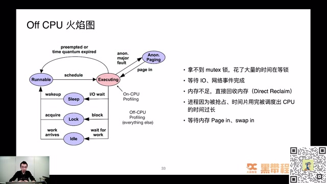
Off-CPU 的等待状态和成因 · 原片 37:48
提个问题：Off-CPU 火焰图一般分析什么问题？延迟、吞吐量、CPU 100% 占用，还是内存泄漏？知道答案可以在评论区刷一刷，看谁比较好地答对，等五秒。看到一些小伙伴新进来，小助理同步一下：今晚主题是 Linux 性能剖析入门与实战，关于性能剖析入门和实战的部分，刚刚张师傅提出的问题，大家可以把答案写在评论区。
怎么各个答案都有，1、2、3、4 都有，好像 4 比较多。这是很容易混淆的答案，还是说多选题？这是单选题。我看很多人已经选错了，终于上了我的当。其实 Off-CPU 火焰图分析的是延迟。大家先想为什么，等一下还没有想明白，我再详细讲。这些答案应该选延迟，也就是 1。
说 Off-CPU 火焰图，这里也写了一个简单的例子。什么叫 Off-CPU 火焰图？
刚刚说等待、阻塞，可能听起来挺迷糊。这里又写了非常简单的 C 代码，里面就是做两个阻塞等待：一个叫 epoll_wait，阻塞等待 20 毫秒返回；再调 usleep，睡眠 30 毫秒返回。从直观感觉就可以看到，main 函数就是等 20 毫秒，再睡 30 毫秒，再执行，循环等待。如果生成 Off-CPU 火焰图，就长下面这样，usleep 占 60%，epoll_wait 占 40%，符合我们的认知，表示整个采样周期里面让出 CPU 的比例。
编校：此处时长按课件代码
epoll_wait(..., 20)、usleep(30 * 1000)记为毫秒；口述与 ASR 中部分“秒”混用，原始转写另存。
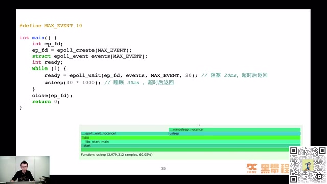
epoll_wait、usleep 示例及 Off-CPU 火焰图 · 原片 41:00
很多人问，On-CPU 能理解，就是 CPU 正在跑的内容；Off-CPU 怎么采到？你都已经让出 CPU，怎么拿堆栈、拿信息？这也是当时我觉得神奇的地方。所以研究了一下 sample-bt 生成的 SystemTap 脚本，精简后代码就是这样，非常简单，注入两个事件，一个 scheduler.cpu_on，一个 scheduler.cpu_off。
记录线程失去 CPU 的时间点，等进程或者线程再次拿到 CPU 执行权时，把时间差记录出来。失去 CPU 的时间点记下来，拿到 CPU 的时间点又记下来，中间 gap 就是 Off-CPU 时间。用了 HashMap 结构，key 是进程 ID 或者线程 ID。比如采样周期是 5 秒，5 秒到了就把退出循环的变量 quit 设成 1，这时候遍历数组，把所有堆栈打印出来。
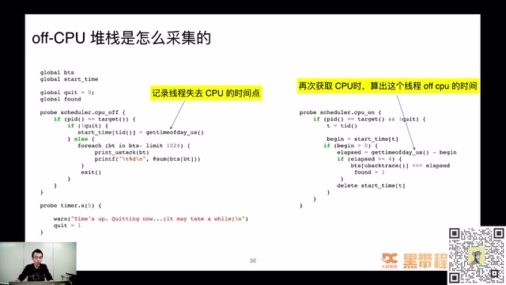
在调出与调入 CPU 时计算 Off-CPU 时间 · 原片 42:36
我们觉得 Off-CPU 火焰图很高端，很难理解到底怎么做；其实真正沉下心研究章亦春工具里最终生成的 SystemTap 脚本是什么样子，就非常理解 Off-CPU 火焰图到底做什么，也能理解程序行为。它因为让出 CPU，没有拿到执行权，中间到底过多久，就能通过脚本统计。就算不做火焰图，做进程调度之间的延迟，也可以用这个方法。
SystemTap 这个工具，很多同学跟我说使用门槛高，不知道怎么用，网上资料少，怎么解决？没有什么特别好的办法，因为这块门槛确实高。如果有 SystemTap 使用问题，或者不知道采样点怎么注入，可以私底下联系，有问题随时讨论。
43:47 上下文切换究竟切换什么¶
讲 CPU 性能问题，还经常讲 CPU 上下文切换。到底切换什么？之前很多同学背操作系统课，这块背得很熟：切换内存空间，切换寄存器。其实这个地方看一下内核代码，就非常清楚。核心做上下文切换的函数叫 context_switch。里面做了进程虚拟内存的切换，因为也要区分是不是同一个进程。如果线程之间切换，其实不用切换虚拟地址空间。接下来还会切换寄存器和内核栈。
做的事也很简单，切一下进程页表的 pgd，把它装到 CR3 寄存器。代码非常简单，却让我们更直观地理解进程、线程的上下文切换到底切换什么。最终 switch_to 是调用汇编代码实现的，里面做了一些寄存器切换相关的事。
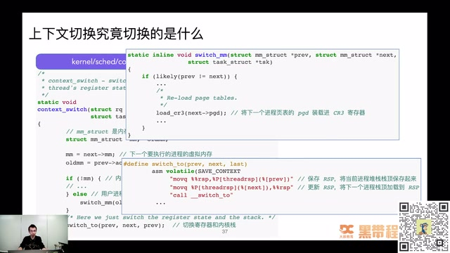
context_switch：地址空间、寄存器和栈的切换 · 原片 45:12
45:07 内存篇¶
第三部分是内存。内存真是程序员老大难问题，也是我日常工作解决过的问题里面，出现频率最高的一种类型。内存泄漏、内存占用过高、OOM 被系统杀掉，隔一段时间不同类型系统就会出现，比如 C/C++ 应用、JVM 应用，都可能在特定情况下出问题。
怎么样真正理解内存，从操作系统角度看，内存到底怎么用？作为开发，怎么样用好内存，知道里面怎么实现，对接下来的代码生涯至关重要。可以说学好了内存，在很多计算机领域里，就可以把很多东西学得非常好。
内存关联知识非常庞大。我把自己以前写的一些文章内容做成词云，可以看到里面有很多，比如 SystemTap、buddy 算法、VSS、overcommit、内存碎片、虚拟内存、PGD、PSS、brk，概念非常多。怎么样从错综复杂的概念里面找到清晰的学习脉络，真正把内存问题搞清楚，也是我一直思考的问题。这次只能介绍皮毛，告诉大家内存里面有什么可能比较好玩的东西，藏在你现在正常运行的代码后面。
弄清楚内存原理，可以帮助解决很多问题。比如 Go 为什么原生支持函数多返回值，为什么 Go 的 1.17 版本开始支持寄存器传参，Go 1.18 支持 ARM 平台基于寄存器传参，逃逸分析怎么做？比如 Go 默认内存管理策略，为什么从 MADV_FREE 改回 MADV_DONTNEED？这个策略其实改了好几次。清楚内存原理，就知道为什么改来改去，各方案有什么优缺点。
编校：Go 版本号在 ASR 中识别为“1.7”“1.8”，此处按紧邻“寄存器传参”的语境记作 1.17、1.18；课件未显示版本号，保留原始 ASR 供回听核对。
对内存比较了解，还可以分析 Java 程序老大难的堆外内存问题。比如用了 Netty 或原生库，出现堆外内存泄漏、很难排查时，怎么分析？还有 C/C++ 写的程序，比如 Nginx、MySQL，出现内存暴涨，或者现在用了百度的 Doris，有时候也出现 OOM 问题，这时候如何分析，用什么思路？
48:20 进程内存布局¶
先看一个进程内存的关系。一个进程在 Linux 上，常见的可执行文件格式是 ELF，比如 Go 打包的可执行文件，或者其他可执行文件，很多都是 ELF 文件。这是一个静态文件，真正运行时，操作系统把它映射到内存空间，也就是虚拟地址空间。
用 pmap -x pid 可以看到这个进程、程序的内存布局。简单理解可以分几个部分：Stack 栈区向下生长，Memory Mapping 区域，Heap 堆区向上生长，还有代码段、数据段，都是核心运行数据区域。
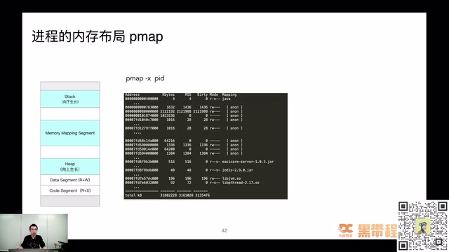
pmap -x 与进程虚拟内存布局 · 原片 48:48
比如 Java 进程，内存都被谁耗走了？这是我以前面试喜欢问的问题。虽然写 Java，但不能只放在 Java 这个编程语言的概念上。Java 进程耗费内存非常多，常见的堆内存之外，还有栈内存、Metaspace；要做 GC，本身就要记录很多信息，追踪哪些内存申请、哪些释放；还有 Direct Buffer、C/C++ Native 消耗，以及 malloc 分配内存时自己本身需要使用内存。
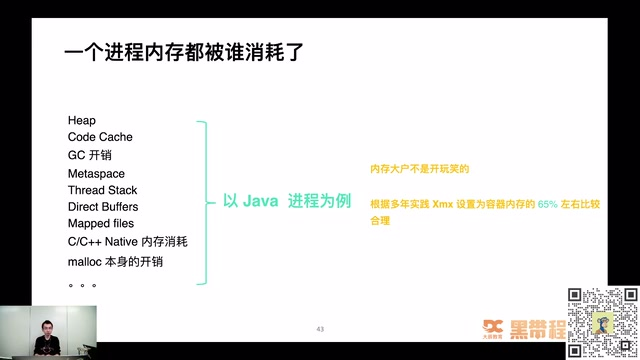
Java 进程中堆及堆外内存的组成 · 原片 50:00
怎么样分析 Java 这样复杂的程序，内存消耗到哪里？如果了解前面这些概念，比如进程内存分布，就会更加有把握。
50:22 Linux 线程栈有多大¶
做一个小测试：大家知不知道 Linux 的线程栈大小是多少？知道的可以在评论区说一下。有人选 1，一兆，有人选 2，两兆，有人选 3，八兆。到底是多少？没人选两 K 吗？好像没有。其实默认线程栈大小是八兆。怎么确认我没有胡扯？可以用 strace 命令看，这是跟踪系统调用非常有用的命令。
在 pthread_create 的时候，会申请一片内存，大小是 8392704 = 8 * 1024 * 1024 + 4096。除了八兆，还多了一个 4K 区域。4K 是做什么的？当时研究这个问题研究了一个下午，实在没想明白，说好八兆就八兆，为什么还要多 4K，这 4K 怎么来？折磨了我一个下午，翻了很多资料，看到 glibc 代码才找到。
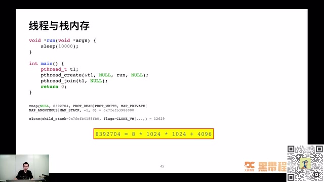
pthread 创建线程时 mmap 分配栈空间 · 原片 51:36
Linux pthread 栈内存有八兆栈，加 4K 的 guard 区域。这个 guard 区域是防止栈越界的一个比较初级手段。4K 区域不可读、不可写、不可执行。只要指针访问这个区域，不管读、写还是执行，都会直接抛出段错误。这样叫 fail fast，让程序快速失败。不会改了另外一个线程的数据，好久后跑崩、跑飞，出现重大行为异常，才知道是栈越界导致。当然，如果直接越过 4K guard 区域，跳过去访问、改写其他线程栈内存，这时候操作系统也没办法保佑你，只能自求多福。程序崩溃还算最好的情况，只跑出一些非常异常行为的时候，那就很恐怖。
这里空口无凭，能不能用实践例子证明？刚刚说 pmap 可以看到进程栈内存分布，也能看到真正有八兆可读可写空间，加上 4K 不可读不可写区域。创建很多线程，就很规律排列成八兆加 4K、八兆加 4K、八兆加 4K。这是理论结合实践，看到真正这样，书上或者别人写的东西诚不欺我。
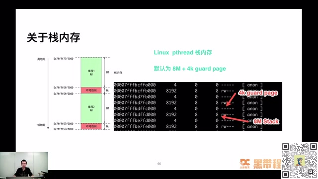
8M 线程栈和 4K guard page · 原片 53:36
53:46 Java 的线程栈又有多大¶
再问一个经常面试问的问题：Java 默认线程栈大小多少？刚刚问的是 Linux 默认线程栈大小，那么 Java 呢？有没有 Java 学得比较好的，可以看一看，答案打在评论区，不知道也可以盲猜，看运气好不好。
有人选 3，八兆。如果八兆，我就不会问这个问题，跟前面答案一样了。有人说 1，回答 1 是对的。有人说 2K，还有选 4 的，2K 不对。Java 线程栈默认大小是一兆，可以改。怎么样确认？Java 实现更复杂一些，没有使用 Linux 默认栈内存分配八兆，而是用一兆，并在里面做特殊区分，分成 Yellow 区域和 Red 区域：8K Yellow，4K Red。
有什么不一样？代码栈溢出到 Yellow 区域，会把它捕获，触发 Java 层面的栈溢出异常。当然，如果程序确实有问题，直接越到红色 Red 区域，JVM 也没办法，会直接 core dump 掉。
这也空口无凭，怎么说你对？也拿实际例子看。运行很多线程，可以看到有一个 1016 和一个 12 组合在一起。为什么不是 1014 而是 1016？8K 的 guard 区域呢？
其实属于那一兆里面，但 pmap 会合并相同权限的内存区块，把 8K 和 4K 合在一起，变成 12K。所以看到 1016K 可读可写区域，这是栈内存；再有 12K 不可读、不可写、不可执行区域，是防止栈越界的，里面又分 4K 和 8K 两个东西。下次用 pmap 看 Java 程序，发现很多 1016 和 12 的区域，可以大胆猜这块是栈内存，不用再怀疑。
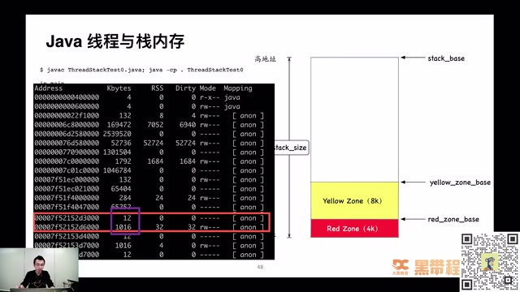
Java 线程栈的 Yellow Zone、Red Zone 与 pmap · 原片 56:24
57:02 堆内存与分配器¶
前面讲栈内存，往往栈内存占用过高还是很少，更多是堆内存。用户空间里，默认是 glibc 提供的 malloc、free 函数申请。也可以替换实现，用其他内存分配器，或者自己实现策略，绕过系统这一层，完全没问题。
malloc、free 只是 libc 里的函数，压根不是系统调用。为什么不直接用系统调用实现，应用程序还要调 libc 这一层 malloc/free？想到的可以在评论区刷一刷。glibc、libc 这一层其实是内存“二道贩子”，是操作系统提供的用户态编程工具。
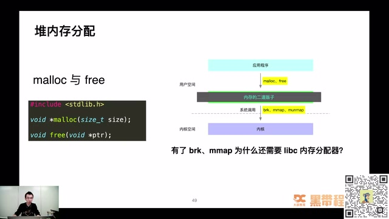
malloc、free 和 brk、mmap 的分层 · 原片 58:12
内存申请大部分非常小，它先申请大块，再切割零售给上面应用，做了内存二道贩子。这样减少系统调用频率，因为系统调用代价比较高。如果内存提前分配好，在用户态直接通过简单指针偏移就能分配内存，效率会大大提高。
Linux 常用内存分配器有哪些？这里列比较常用的。第一个 dlmalloc，现在用得非常少。最多的是中间这个，Linux 默认内存分配器 ptmalloc，基于 Doug Lea 开发的 dlmalloc 库，只不过增加多线程支持，使它在多线程情况下也比较高效分配内存。当然这是默认分配器，大厂看不上，比如 Facebook 搞了 jemalloc，Google 搞了 tcmalloc，这两个库都很高效。
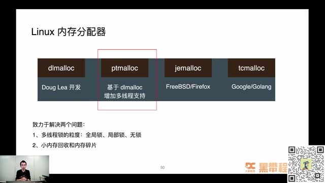
Linux 中常见内存分配器及其关注的问题 · 原片 59:24
它们都致力于解决两个问题：多线程下锁的粒度，是分配内存时竞争全局锁，还是局部锁，还是过程中无锁；第二是小内存回收和内存碎片问题。内存碎片在 ptmalloc 这里非常明显。很多时候 Java 占用内存很高，不一定真的内存泄漏，很可能因为内存碎片导致内存无法回收，所以整个进程占用非常高。之前在线上环境替换过，发现换成 jemalloc 后，内存碎片好非常多，内存占用降低非常多。
前面说 libc 里做了内存二道贩子，做了一个模拟堆，做的就是切割零售。其实零售非常好理解。
先申请一大块，就跟切猪肉一样，有人来买，就切一块给他。这里先申请一个 64 兆区域，不可读、不可写、不可执行，因为还没有被任何人申请过。如果有人申请，调一个叫 mprotect 的系统调用，把这个区域权限改成可读可写，这样就能被使用；剩下区域还是不可读不可写不可执行，属于接下来可以分配的部分。
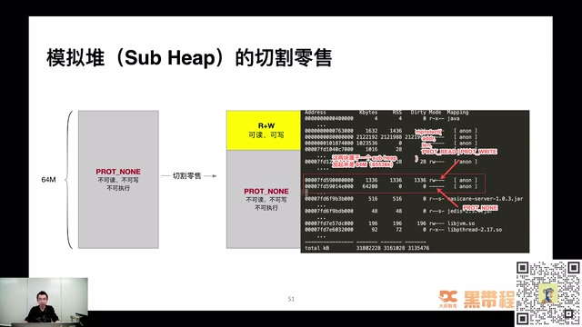
64M Sub Heap、mprotect 与 PROT_NONE 区域 · 原片 01:01:12
拿线上实际例子看，红框里一块 64200，一块 1336，这两个区域属于一个叫 Sub Heap、模拟堆的地方。1336 这块权限可读可写，已经被切割零售；剩下接近 63 兆、64200 这个区域，不可读不可写不可执行，是还没切割零售的部分。
这个 64 兆有特殊含义，在很多性能问题上都会遇到 Linux “迷之 64 兆”问题，很多文章出现过。我写过一篇，就是图里最下面“一次 Java 进程 OOM 的排查分析”，是之前遇到的问题，当时整理怎么解决，就跟 64 兆区域有关。如果只是了解 Java 堆内存的排查工具，很难解决不常见却非常重要的问题。感兴趣可以去掘金或者我们的公众号，看这边怎么介绍 64 兆问题。接下来继续内容。
62:32 内存与 I/O¶
第四部分，就是 Linux 三驾马车第三个部分，I/O。程序做持久化、数据写入读写，一定遇到 I/O 问题，接下来详细看。这又有一个小测试：Linux 读写文件有哪几种模式？知道答案在评论区刷一刷，等五秒。已经有人发了，有选 1、有选 2。我没有说是单选还是多选，有可能多选，大家可以继续发。
答案其实是 1 和 2，称为 Buffered I/O 和 Direct I/O，等一下详细讲。选 2 的可能漏掉第一个。从大的角度看，Linux I/O 模式只有两种，一个 Buffered I/O，一个 Direct I/O。Memory-Mapped I/O 也是 Buffered I/O 其中一种类型。
Buffered I/O 和 Memory-Mapped I/O 指什么？用户进程把文件数据写到 Page Cache 就返回，没有真正落到磁盘，只写了内存。Page Cache 是内核层的一块内存空间，写完就返回，速度非常快。
所以经常担心读写文件很慢，其实也是常见误解。如果内存足够大，写文件就是写内存，速度跟写内存几乎没有太大差异。当然，如果内存非常捉襟见肘，那就是另一回事。
另一种模式 Direct I/O，不使用操作系统提供的 Page Cache。很多人觉得操作系统 Page Cache 策略太垃圾，很多非常牛的人写中间件、写数据库，都直接绕过 Page Cache，由应用程序自己维护 cache，这也比较常见。但写业务代码，这块用得少，除非做非常高性能场景，比如实现 MySQL 存储引擎、高性能缓存系统，可以用 Direct I/O。
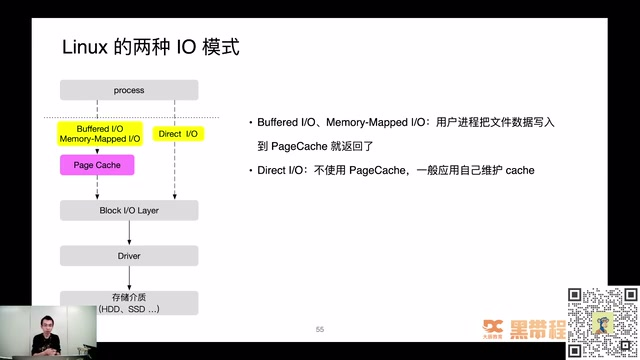
Buffered I/O 与 Direct I/O 的路径 · 原片 01:04:24
Buffered I/O 读写文件，其实是读写内存，读写的就是 Page Cache，由操作系统决定什么时候把 Page Cache 刷回磁盘。这非常关键。大家可以理解，磁盘文件是不是有点像落盘的 MySQL？Page Cache 有没有像 Redis？前面应用有没有像业务服务？里面就是做了缓存。缓存带来什么问题？数据会不会一致？大家一定会想到，经常问 Redis 和数据库怎么保持数据一致，其实这里一样有这个问题。
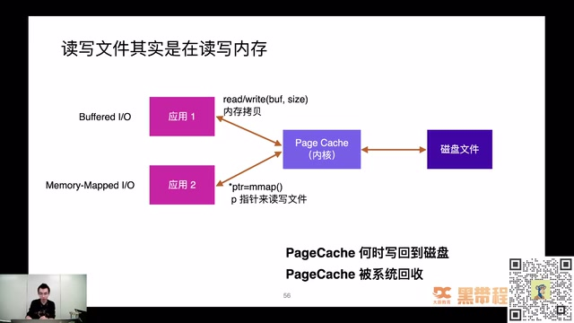
read/write、mmap 与内核 Page Cache · 原片 01:06:24
这个问题还算比较容易解决，看它几个维度。有两个比较大问题：什么时候写回磁盘，有些 Page Cache 可以被系统回收，什么时候回收？Page Cache 脏页写回有两种策略，一种主动写回：应用程序主动调 fsync，把脏页写回磁盘。如果应用觉得当前内容重要，一定要落盘才返回，就调 fsync 同步脏页。
如果应用对文件最终是否落盘没有极度敏感，就放心交内核处理，由内核线程刷新脏页。刷新也有不同维度，从大层面分时间和空间。时间维度，什么时候写回；空间维度，假设时间设得不合适，堆积非常多，一旦系统宕机、断电，丢失数据就非常多。所以也有空间维度，脏页累积多少，或者脏页率到多少，一定要写回磁盘。
就这两个维度，非常好理解，不能等太久，也不能等脏页太多，直观理解就是这两个。参数怎么配不用记，用到再查，有这个概念就行。课件的时间参数是 dirty_expire_centisecs、dirty_writeback_centisecs，空间参数是 dirty_background_ratio、dirty_ratio。
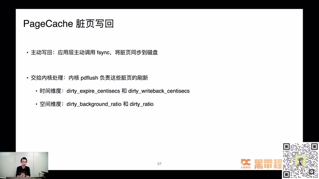
Page Cache 脏页写回的时间与空间参数 · 原片 01:07:36
67:46 Redis AOF 文件写入¶
Redis AOF 文件写入也有这个问题。是不是每次写入都要落盘？有参数可配，叫 appendfsync，三个选项。always 就是每次写操作执行一次 fsync，是最安全、当然也是性能最弱的方式。如果配 always，Redis 性能会受到严重影响。还有 everysec，每秒调一次 fsync，这样保证最坏情况下只丢一秒数据。no 就是前面提到直接交给操作系统的刷新线程处理。这三个怎么选，可以结合实际情况。我们一般配 everysec 比较多，每秒刷一次盘，既不会每次写都同步导致性能问题，也不会交操作系统而不放心。
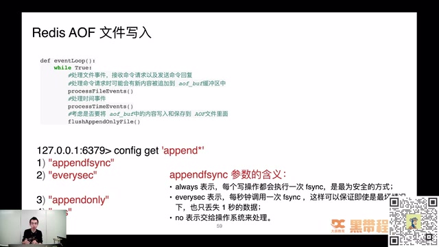
Redis AOF 写入与 appendfsync 配置 · 原片 01:08:48
68:49 Page Cache 回收带来的性能问题¶
Page Cache 回收也带来性能问题，比如直接内存回收，内存严重不足时要回收，会在进程执行的上下文里做，阻塞整个进程执行。假设正执行业务代码，应用响应时间就变非常长。还有脏页堆积过多，会带来 Load 飙升。
直接内存回收到底什么东西？有几步：申请内存，触发 page fault，里面找有没有内存；有就没有延迟，直接返回。如果没有可用内存，会先启动后台回收。如果后台回收速度足够快，也没有延迟，直接返回内存。如果回收仍慢、内存不够，就会阻塞应用上下文，直接执行内存回收，也就是 Direct Reclaim，带来巨大延迟。
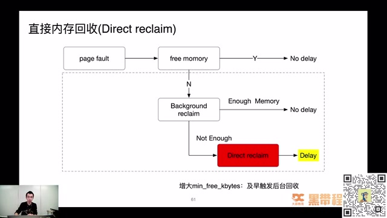
后台回收不足时触发 Direct Reclaim · 原片 01:10:36
想解决也没特别好办法，有个土办法，增大 min_free_kbytes，及早触发后台回收，这样真正用到时，内存相对充足。后面系列课也可能详细讲配置及对程序行为的影响。
脏页堆积过多也会带来 Load 飙升。比如申请内存，回收内存，把脏页写回 I/O；如果刚好是很慢的 I/O 设备，甚至设备是网络设备，整个写回过程会让系统 load、看到的 load average 飙升。
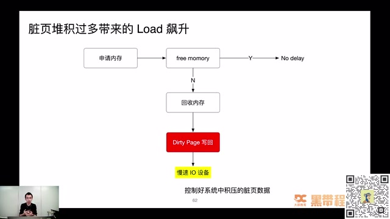
脏页积压、慢 I/O 与 Load 升高 · 原片 01:11:00
70:58 案例：百万长连接压测中的 Nginx OOM¶
接下来详细讲以前解决的一个性能分析问题。我觉得稍微复杂一些，综合用到网络、内存命令和背后原理，还做了一些实验。之前专门写过掘金文章详细讲产生过程，这里讲怎么出现，当时什么背景。
背景是做 IM 压测。大家知道 IM 用保持长连接，这里测试要支持百万长连接。有很多台 JMeter 服务器，还有四台 32 核、128G 的 Nginx 服务器。当 JMeter 开始发量，可以看到黄色那条线，就是 Nginx 内存，蹭蹭往上涨，涨到最高值、128G 左右就被系统杀掉，出现 OOM，进程被杀掉。然后又重复这个过程，又蹭蹭往上涨，涨到 128G 又被杀掉。这时候压测压根起不来，因为花很多钱搭了比较好的压测环境，也买了很多台机器作为 JMeter 压测发起端，钱按小时算，但性能问题一直没有解决，所以帮忙分析到底怎么产生。
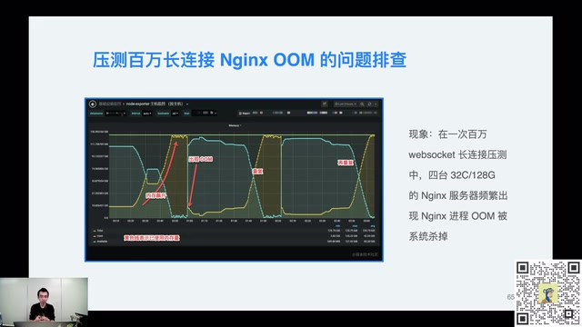
百万 WebSocket 长连接压测中的 Nginx OOM · 原片 01:12:24
调用方式非常简单：JMeter 这一端调 Nginx 接口，接口跟后端做数据交互。
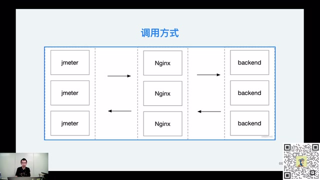
JMeter、Nginx 与后端的调用关系 · 原片 01:13:12
首先初步确定问题方向。在 Nginx 服务器端用 ss -nt，发现 Send-Q 堆积很大。然后抓包，在 JMeter 这一端也抓了包，发现大量零窗口。零窗口大家应该清楚是什么事情。这就可以初步分析，有较多消息堆积在中转 Nginx，要么 Nginx 发得太慢，要么 JMeter 收得很慢。
因为是内存相关问题，当时用 pmap 初步看 worker 进程内存分布，找到内存占用很大的区域，大概几百兆。把内存 dump 出来查看内容，发现大量请求和响应 body 堆在内存。从原理上说不应该，Nginx 只是做 proxy、请求代理，为什么大量请求响应都堆在这？当时百思不得其解。
后来想，会不会上下游收发速度不一样？比如 JMeter 收包很慢，Nginx 后端却发得很快，数据都堆在 Nginx。这一定有参数可以配置，想到 proxy_buffers。服务器上这个参数从其他配置拷来，设得很大，是 proxy_buffers 64 16M;，也就是 64 个 16 兆区域做 proxy buffers，乘起来等于一个 G。
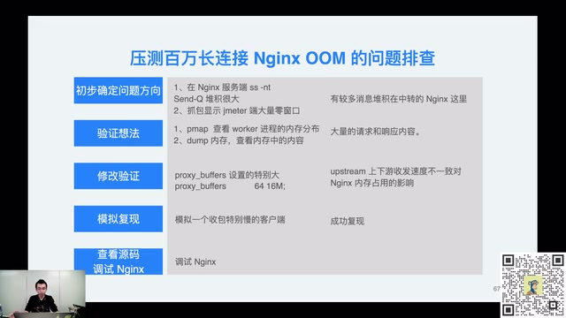
Nginx OOM 的逐步排查和验证 · 原片 01:14:36
是不是这个值设得特别大，上下游收发速度不一致导致 Nginx 内存占用？光猜没用，就写代码复现。用 Go 写很简单的 client，发 GET 请求到 Nginx，后端返回 demo.mp4 文件，大概 450 兆。client 收包这一端自己写个“小水管”，每秒才收几个字节，模拟收包很慢的客户端。
client 发请求到 Nginx，Nginx 把请求透传后端，后端知道有人要 450 兆数据，就蹭蹭往 Nginx 发。Nginx 内存足够大，就直接接收，不会说“你发慢点”，网络也 OK。但收到后堆在自己内存，client 这个小水管收得很慢，所以 Nginx 内存一下增加 450 兆左右，模拟复现了这种情况。马上修改，把 proxy buffers 调小，调得很小，再实验，马上解决了。
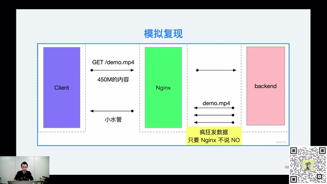
慢客户端与快速后端的复现结构 · 原片 01:16:36
解决以后还没完。要搞清楚一个问题，不能只看官方文档，要看参数到底怎么实现。所以调试 Nginx 源码。Mac 上非常容易搭 Nginx 调试环境，可以用 CLion，也是 JetBrains 旗下工具，就可以很好地调试刚刚说的 proxy buffers 到底怎么做。
可以看到，真的有请求过来，会分配 16 兆内存空间。红框区域里面，proxy buffer 大小是 16 兆，总共个数 64。这里判断已经分配个数有没有大于 64，没有就继续分配。从这个例子，知道 Nginx 行为确实如我们所料：proxy buffers 设置不合理，跟后端之间传输很快、带宽几乎无限制，而客户端收包很慢，会导致内存飙升。
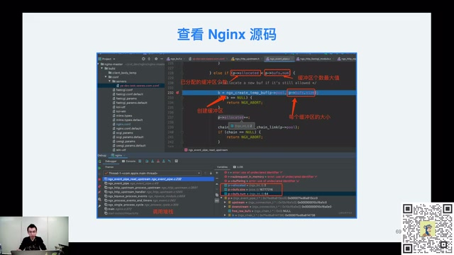
Nginx 源码中的缓冲区分配与调试 · 原片 01:17:24
把参数调整后再压测，就再没出现 OOM，内存占用很长时间非常稳定。当然，还要解决 JMeter 收包慢，这是另一个话题。比如线程数量过多，线程切换代价过高，是后面解决的问题。
这里例子介绍差不多。用到了什么？其实几个工具。首先知道网络相关知识，因为 Nginx、后端、客户端都通过网络通信。不知道任何情况，可以先抓包、看网络连接，看有没有端倪。知道大概情况、有初步排查方向后，用 pmap 看内存分布，看内存到底存什么，进一步确认排查方向。接下来做实验，先解决；如果确实解决，再看源码，是不是如我们所料，进一步巩固这块内容。
79:03 分享结束、下期预告与答疑¶
到这里整个分享结束。预告下周三话题，CPU 性能分析。下一次会实际做实验演示，比如生成火焰图，排查 CPU 跑满，刚刚说的 CFS 调度问题，到时候实际翻车演示。想看翻车过程，到时来直播间围观，我会实际操作命令，演示怎么看性能问题、怎么分析。
对黑马程序员出品感兴趣，可以添加小助手，获得更多课程，以及接下来直播相关信息。好，谢谢大家关注。现在是答疑时间，今晚分享里面，大家对知识点、讲解方式或者案例有想提问的，可以现场写在评论区，待会张师傅会看问题，逐一解答。还有最后一轮抽奖环节。
QA 与下一期 CPU 性能分析预告 · 原片 01:20:00
片尾说明：本视频的口述到约 80:31 结束，最后约 13 秒保留静态 QA 页且已无音轨；所提供视频未包含后续逐题答疑内容。